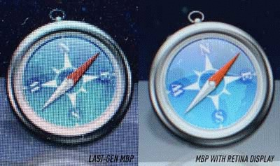
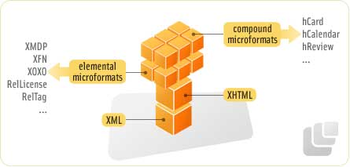

2014年のWeb動向予測
[ PR ]
新年になってもうすぐ1ヶ月になりますね。
さて、新年恒例ですが、各界では1年の予想が行われます。
Web業界でも予測が行われているので、その一部を紹介します。
出典元は最下部で紹介しますが、sitepointから引用しています。
2014年はスマートフォンの年

当ブログでも以前紹介しましたが、おそらく今年にはデスクトップとモバイルのWebアクセスが逆転するというデータが出ています。
その傾向は、南アメリカとアジアで顕著なので、おそらく日本でもスマートフォンサイトの需要が伸びると思います。
HTML5アプリが主流になる
Craig Bucklerによると、以下の理由でネイティブアプリ開発者がHTML5にシフトすると予測しています。
- HTML5アプリはクロスプラットフォームで、開発費が安い（安いべき）
- レスポンシブデザインの技術で、複数デバイスや異なるスクリーンサイズに対応できる
- HTML5の技術は、ネイティブより速く開発でき、オフライン・カメラ・GPS・振動などのネイティブ機能へのアクセスを容易にする
- HTML5アプリは、App Storeによる規約での制限や不当な料金を請求されない
しかし彼は同時に、HTML5はネイティブとは置き換わらないとも言っています。
ネイティブ技術は、ゲームなどの高速処理が必要な分野で重要であり続ける一方で、HTML5から享受する利点は増え続けていると述べています。
訳注
個人的な意見ですが、筆者が重要性を強調する一方で、Facebookなどは、「HTML5に投資しすぎて失敗してしまった」とも言っているため、必ずしもHTML5がニーズに合うとは言えないと思います。
もしかするとFacebookの一件は、前述の「高速処理が必要な分野」だったのかもしれませんね。
クライアントFlash、Silverlight、Javaは衰退する
これは多くの人が予測されていると思いますし、私もその通りだと思います。
ただCraig Bucklerは、Flashは広告分野で生き残るだろうと言っていますが、モバイルの急増により収益は減るだろうと予測しています。
確かにデスクトップ広告は、現状でもFlashは相変わらず多いですね。
訳注
ちなみによく誤解されているのが、スマートフォンではFlashは動かないということですね。
確かにFlashプラットフォームは動きませんが、Adobe AIRは動きます。理由は、Emscriptenによってネイティブコンパイルされるからですね。
Flash技術は形を変えて、アプリとして生き残るかもしれないですね。
Internet Explorer 12 がおそらくリリースされる
筆者は10月より前だと予想しているみたいです。
IEはあんまり興味ないので省略します。すいません。笑
ブラウザシェアはIEとChromeが占める
デスクトップブラウザのシェアは最も気になる話題の１つですが、筆者はおそらくIEとChromeが２大ブラウザになると予測しています。
加えて筆者は、他方が優位になれば、他方が衰退すると見ています。
ちなみにFirefoxは振るわず15%ほどのシェア、Safariは10%ほどのシェアになるとも予測しています。
Opera・・・。
Operaのデスクトップ版はユーザが減る
Operaは最近、Blinkというエンジンに切り替えることを発表し、Opera 15から採用しました。
しかし、その時点で以前からのユーザが激減し、2 / 3のユーザがOpera 12を使い続けています。
ユーザが離れている理由は、Blinkは元々Webkitからフォークされたという経緯があるというのは言うまでもないと思います。
一方でモバイル版は…
モバイル版Operaは依然、根強いユーザがついていますが、やはり売上は落ちています。
これからのOperaの方向性を決めるのは、いかに他のブラウザと差別化できるかに掛かっていると言えます。
Opera・・・がんばれ！
Windows RTはなくなるか別ブランドになる
WindowsとWindowsRTの違いを知るユーザは少なくなってしまいましたが、依然マイクロソフトはRTを売り続けています。
しかし、Surface RTがSurface 2として再ブランド化された経緯もあり、おそらくWindows RTも同じ経緯をたどるのではないかと予測されています。
訳注
個人的な意見としては、そもそもWindows8がタブレットなのかデスクトップなのかどっちつかずだと思います。
つまり、Surfaceの売れ行きがWindows RTの行方を左右するのではないかと思います。
やっぱり、iPadのようにタブレット用OSを作って欲しいですね。
レスポンシブ画像技術が進化する

筆者が言うには、レスポンシブ画像技術は現在はまだ未熟で、おそらく2014年に各ベンダーが標準的な技術を実装するという予測をしています。
確かに現在の画像切替技術であるpixel-ratioは、そもそもApple独自のものなので、W3C標準規格ではありません。
是非今年中に対応してほしいものですね。
ページ容量が減少に転じる
現在、ページの容量は年々増え続け、ついに現在の平均容量はなんと17MBにもなってしまいます。つまり約半分のページは17MBを超えているのが驚きです。
しかし筆者の予測では、以下の技術を使い軽量化し始めると予測しています。
- Webフォントを利用したアイコンやSVGの利用
- CSS3のリッチな機能による、画像やJavaScriptの減少
- 広告がFlashからHTML5に変更されることによる減少
- 自動でファイルを圧縮（minify）するビルド技術の普及
- 容量の大きい（読み込みの遅い）ページはSEOが悪化
- モバイルの帯域制限による、Webページの軽量化
訳注
個人的には概ね賛同しますが、SVGはあまり普及しないのではないかと思います。逆にWebフォントアイコンは爆発的に普及すると思います。
自動ビルドツールがWeb業界にももっと普及し、もっと使いやすくなるといいなと思います。
欲を言えば、画像圧縮技術がAdobe並に進化してほしいですね。
機械が理解できるデータ形式の重要性が増す

昔からGoogle Botなどがクロールしていますが、2014年は現在よりBotの重要性が増すことで、マイクロフォーマットのような機械に読ませるデータの重要性が増すと筆者は予測しています。
この技術が進化することで、よりユーザに合った検索結果を提供したり、構造化データからより細かいデータを読み取ることが出来るようになります。
これらの進化のためには、より複雑なレスポンスを返すために、バックエンドのデータベースやビッグデータ処理技術などの進化も必要です。
つまり、この分野が進化すると新しいWebの未来が開けると筆者は予測します。
まとめ
2014年がどんな年になるかは誰にもわかりません。
個人的には、技術的な問題ばかりに焦点を当てず、もっとユーザのニーズや環境の変化に敏感なWeb技術であってほしいと思います。
出典

 | コマンドの終了時に好きな音を鳴らす方法 |
 | 年代別に見るCPUの進化 ― あなたのCPUのスコア知ってますか？ |
 | 最も優れたキーボードランキング |
 | 最も素晴らしいマウスランキング |
 | 世界の凄すぎるダンボールアート10選 |
[ PR ]